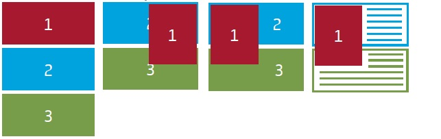
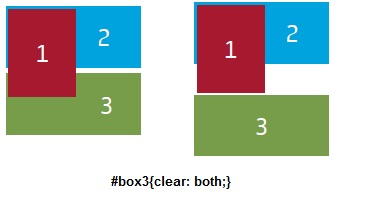

CSS Positioning
CSS Positioning and layout is moving, placing or rearranging the elements or boxes of a web page. A web browser firstly reads the HTML document and CSS styles which apply to each box, and then displays the page.
Float is an easy way to position the elements of a web page. The elements of a web page can be only be floated right or left. When an element is floated, it will be moved as far right or left as possible. However the rest elements after the floated element will not change their shape but instead their content will be wrap around the floated element.
{kind=link}
To overcome this problem you should use the CSS clear property. The values left, right or both of the CSS clear property determinates which side of the non-floated elements should be cleared of the floated element.
{kind=link}
To turn a non-floated element into a column you can use the margin and padding properties.
There are four values to re-position elements in CSS. The static value, it is not normally set unless to override other position. The relative value, leaves elements in the page flow but allows them to be displayed in other offset position. The absolute value, removes the elements from the page flow and allows them to be positioned anywhere in the page. Lastly, the fixed value, removes the elements from the page flow, fixes them to the browser view port and the rest of the page can scroll behind them.